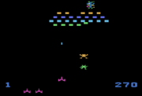

Communist Mutants from Space
From Wikipedia, the free encyclopedia
Communist Mutants from Space is a fixed shooter video game programmed by Stephen H. Landrum for the Atari 2600 with the Starpath Supercharger cassette accessory. It was published in 1982 by Starpath (formerly Arcadia).[2] The game is similar to Galaxian,[3] adding a variety of gameplay-changing options.
- Plot
- Gameplay
- Game options
- Easter egg
- References
- Further reading
- External links
Plot
[edit]
Aliens from the communist planet of Rooskee are invading peaceful, democratic planets and turning their inhabitants into "Communist Mutants." The communist mutant armies are controlled by the Mother Creature, a strange alien who has gone mad due to irradiated vodka.[4]
Gameplay
[edit]
The player starts off with three reserve cannons. The object is to destroy the mutants aliens and, most importantly, the Mother Creature. The mutants hatch from moving eggs at the top of the screen. Because the Mother Creature replenishes eggs when they hatch or are destroyed, it must be defeated before the player can advance to the next wave. If a mutant or a bomb thrown by a mutant comes into contact with the cannon, the cannon will be destroyed and a reserve must be called up. A new cannon is awarded on every other wave.
Game options
[edit]
An in-game menu allows a variety of gameplay changes. The player may toggle the shield option on or off. If activated, "shield" mode allowed a player to press down on the joystick to become invincible for a short period (only one shield was allotted per level). "Time warp" allows the player to press up on the joystick to temporarily slow the enemies. The type of shot fired can be changed by activating the "penetrating fire" option (which enhances the beam fired so that it can hit two mutants rather than one) and/or the "guided fire" option (which causes the beam to be moved with the joystick rather than firing in a straight line).
The menu also allows for multiple players (up to four) to play. Players one and three share the first joystick while players two and four share the second.
Destroy the Mother Creature while avoiding mutants and their bombs.Easter egg
[edit]
Holding fire during power-on of the Atari 2600 causes the "HI" on the high scores screen to change to "SHL", the initials of programmer Stephen H. Landrum.[5 ]
References
[edit]
- ^ Hague, James. "The Giant List of Classic Game Programmers"
- ^ I break for Arcadians:Entertainment abounds in a gaggle of games, Page 26, InfoWorld, 27 Jun 1983,
- ^ Brundage, Darryl (June 23, 2005). "Communist Mutants from Space". The Atari Times.
- ^ "Communist Mutants from Space manual". archive.org. Starpath. 1982.
- ^ Federico, Chris. "The Complete 2600 Easter Egg Archive"Orphaned Computers & Game Systems. Retrieved 2007-12-28.
Further reading
[edit]
External links
[edit]